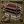
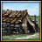

建築（Buildings）象徵着一個省份的基礎建設與發展，把金幣投資在建築上將可以在幾百年間獲得穩定的回報。
建築槽位
新建建築需要有空餘的建築槽位，部分建築可隨着科技提升。升級建築無需額外的建築槽位，而是使用原有建築的槽位。
由於  貿易中心默認佔用2個建築槽位，因此貿易中心省份最多能擁有10個建築槽位，而非貿易中心省份則最多能擁有12個建築槽位[1]。
每個省份的可用建築槽位取決於地形和省份發展度[2]：
貿易中心默認佔用2個建築槽位，因此貿易中心省份最多能擁有10個建築槽位，而非貿易中心省份則最多能擁有12個建築槽位[1]。
每個省份的可用建築槽位取決於地形和省份發展度[2]：
[math]\displaystyle{ \text{建筑数量} = 2 + \text{建筑槽位修正} + \lfloor 0.1\cdot \text{发展度} \rfloor }[/math]
| 條件 | |
|---|---|
| +2 | 基礎 |
| +1 | 省份地形是農田、旱地或草原 |
| +1 | 省份擁有一座  政府類型建築 |
| +1 | 省份擁有一所 |
| +1 | 省份擁有一所 |
| +1 | 同區域擁有3級貿易中心的省份 |
| +1 | 省份每有10點 |
| +1 | 省份每擴建一次基礎設施 |
| +1 | |
| −1 | 省份是 |
註：大學可以認為不佔有建築槽位。如果省份沒有可用建築槽位，大學會佔據它將要提供的建築槽位（1.15版本之前玩家需要拆除一個建築為大學騰出位置，大學建造完再重新建造原有建築）。
例子：如果「巴黎」是  法蘭西的城市，擁有溫帶氣候和農田地形，沒有來自建築的修正，並且省份
法蘭西的城市，擁有溫帶氣候和農田地形，沒有來自建築的修正，並且省份  發展度為32點，那麼：
發展度為32點，那麼：
[math]\displaystyle{ \text{建筑数量} = 2\, +\, 0\, +\, 1\, +\, 0\, +\, \lfloor 0.1\cdot 32 \rfloor = 6 \text{ 个建筑} }[/math]
建築分類
建築要在省份使用  金幣進行建造。建築總共分為三大類：
金幣進行建造。建築總共分為三大類：
常規建築
這些是適用於你所有省份的通用建築，分為七類：行政建築、陸軍建築、海軍建築、生產建築、貿易建築、堡壘和稅收建築。
這其中每類都包含數個建築，絕大多數建築都可以升級到更好的建築，但也有一些建築（比如大學）會佔據一個建築槽位但無法升級到更高等級。你不需要在建造高等級建築之前先建好低等級建築；如果你這樣做了，你只需要支付兩者差價來升級建築。
工廠
工廠是工業革命早期的工業生產建築，他們獨特之處在於可以增加省份貿易商品產出，例如武器廠只能在生產銅礦或鐵礦的省份建造。各種工廠的具體信息請參見工廠列表。工廠的作用相同，區別在於解鎖建造所需的科技等級和類別不同。然而沒有生產黃金省份專屬的工廠。在生產煤礦的省份上建造的熔爐將增加所有貿易商品的產量。
土著建築
美洲土著國家在擁有土著議會政體時只能建造獨有的土著建築。所有建築都沒有科技要求，並且提供的效果也不同於普通建築。土著國家改革政府，或者省份被割讓給非土著國家時，這些建築會立刻消失。
花費
所有建築都需要花費  時間和
時間和  金幣來建造。如果是升級原有建築到更高級別建築，建造花費會相應減少，但時間並不會減少。
金幣來建造。如果是升級原有建築到更高級別建築，建造花費會相應減少，但時間並不會減少。
除了下述建築花費修正外，特定省份也可能有隻適用於本省份建造的修正，比如生產 鐵礦 ( −20% 當地建築時間) 或者
鐵礦 ( −20% 當地建築時間) 或者 熱帶木材 ( −20% 當地建築花費)。
熱帶木材 ( −20% 當地建築花費)。
以下是建造所需金幣花費的修正：
| 條件 | |
|---|---|
| −20% | 開啟 |
| −15% | 當 |
| −15% | 當 |
| −10% | 當 |
| −10% | 當 |
| −10% | 當 |
| −10% | 當 |
| −10% | 當 行會派系在 |
| −10% | 當君主擁有 |
| −2.5-10% | 忠誠的 |
| −5% | 當帝國改革「要求改革」通過後 （ |
| −5% | 當 |
| −5% | 當文藝復興思潮被接納後 |
| +1% | 每百分之一 |
| +10% | 當君主擁有 |
理念和政策：
| 傳統 | 理念 | 獎勵/野心 | 政策 | |
|---|---|---|---|---|
| -15% |
|
|
— |
|
| -10% |
|
|
|
— |
| -5% | — |
|
— | — |
決議和事件：
| 事件修正 | 觸發條件 | ||
|---|---|---|---|
| −20% | 特蘭西瓦尼亞的黃金時代 | 持續15年 | |
| −20% | 公爵的建設項目 |
|
持續10年 |
| −10% | 伊麗莎白·威爾布拉漢 |
|
持續20年 |
| −10% | 漢薩經濟改革 |
|
持續到統治者下台 |
| −10% | 米馬爾·希南 |
|
持續到統治者下台 |
| −10% | 創造 | 持續到統治者下台 | |
| −5% | 建築工資 | 殖民領事件（僅在DLC
|
持續3年 |
| +10% | 發行貨幣 |
|
持續到災難結束 |
| +20% | 柏林人民不滿停息 |
|
持續到統治者下台 |
常規建築
建築
所有常規建築的基礎建設  時間是12個月，並在建成後提供各種好處。
時間是12個月，並在建成後提供各種好處。
| 分類 | 科技 | 常規建築（科技需求） | ||||
|---|---|---|---|---|---|---|
| 行政 | |
市政廳（22） 升級自法院 |
|
|||
| 生產 | |
升級自工場 |
||||
| 稅收 | |
升級自大教堂 |
||||
| 海軍 | 造船廠（8）
|
大船廠（24） 升級自造船廠 |
碼頭（6）
|
升級自碼頭 | ||
| 貿易 | |
升級自集市 |
升級自貿易倉庫 |
|||
| 沿海 | 岸防工事(5)
|
海防炮台（12） 升級自岸防工事 |
||||
| 陸軍 | 兵營（6）
|
升級自兵營 |
|
徵召中心（22） 升級自軍營 | ||
要塞
- 主條目：陸戰#要塞
防禦類型建築（要塞）的基礎建造 時間是30個月。要塞能抵禦敵人的佔領、在戰爭時期阻撓鄰近省份的敵軍行動，重新佔領相鄰的非要塞省份, 迫使敵人圍攻要塞省份並減少本省份和陸地相鄰省份的荒廢度。
時間是30個月。要塞能抵禦敵人的佔領、在戰爭時期阻撓鄰近省份的敵軍行動，重新佔領相鄰的非要塞省份, 迫使敵人圍攻要塞省份並減少本省份和陸地相鄰省份的荒廢度。
要塞需要每個月持續的維護。 要塞維護費隨着要塞等級提升。建議在和平時期廢棄要塞來減少-50%的
要塞維護費隨着要塞等級提升。建議在和平時期廢棄要塞來減少-50%的 要塞維護費。（可以對每一個要塞單獨調整）。
要塞維護費。（可以對每一個要塞單獨調整）。
| 類型 | 科技 | 建築名稱 (科技等級需求) | |||
|---|---|---|---|---|---|
| 防禦 | |
升級自城堡 |
星堡（19） 升級自棱堡 |
要塞（24） 升級自星堡 | |
工廠
所有工廠花費  500金幣，基礎建設
500金幣，基礎建設  時間是60個月，工廠只能在擁有相關商品產出的省份建造。
時間是60個月，工廠只能在擁有相關商品產出的省份建造。
原住民建築列表
所有的原住民政體建築的基礎建設時間為  12個月，在完成改革政府體制後將失去所有的原住民建築。
12個月，在完成改革政府體制後將失去所有的原住民建築。
原住民常規建築
除灌溉與護欄需要花費 200 金幣外，其餘原住民常規建築花費均為 100
金幣外，其餘原住民常規建築花費均為 100 金幣。
金幣。
| 建築 | 效果 |
|---|---|
土方 Earthwork |
|
大步道 Great Trail |
|
長屋 Longhouse |
|
倉庫 Storehouse |
|
護欄 Palisade |
|
原住民唯一建築
所有原住民唯一建築花費均為 200 金幣，且每個國家的每一種唯一建築僅能建造一次。
金幣，且每個國家的每一種唯一建築僅能建造一次。
| 建築 | 效果 |
|---|---|
儀式火坑 Ceremonial Fire Pit |
|
加固房屋 Fortified House |
|

汗屋 Sweat Lodge |
建築策略
建築策略
你該熟記於心的有關於資建建築物的經驗法則。
- 只有在更重要的領域不需要錢時，才可用閒錢投資建築物。
- 應注意建築在該省產生利潤所需的時間。有些省份可能太窮，以至於所建建築不可能在剩餘時間內帶來太多收益。
- 當你考慮大規模鋪建築時，建議點選
 經濟理念組，並將其與政策相結合，以縮減建築成本。
經濟理念組，並將其與政策相結合，以縮減建築成本。 - 值得注意的一點是，除了
 本地自治度，省份的收入也會受到
本地自治度，省份的收入也會受到  文化和宗教的影響。
文化和宗教的影響。 - 每個省份的空間是有限的，你可以選擇增加本地發展度或升級貿易節點以增加可用槽位。
建築順位
建築的定位可以對投資的回報造成大額的影響。因此建議在適宜的省份以下建築：
- 絕大多數建築提供基於百分比的獎勵，這意味着在高
 發展度且擁有低 本地自治度的省份建造建築會取得更高的收益。貿易類建築更適合建造在高
發展度且擁有低 本地自治度的省份建造建築會取得更高的收益。貿易類建築更適合建造在高  本地貿易力量的省份上。
本地貿易力量的省份上。 - 提供均一獎勵的建築物最好建在自治領地省份，因為它們不會受到高自治度的影響（僅限堡壘[5]），或者是在低發展度直屬州省份（可以是堡壘、軍營、船廠類）。
- 特定的階層對總發展度不利，但是可以把建築和階層相結合，以更好地提高某一類發展度。這些階級不光可以無視本地某些方面的自治度，而且在它們忠誠時可以提供更多獎勵：舉個例子，
 商人階層和
商人階層和 齊米階層分別促進貿易和稅收。
齊米階層分別促進貿易和稅收。 - 工廠增加
 本地商品產出，這樣不但增加本地
本地商品產出，這樣不但增加本地  貿易額，也增加生產收入。將它與生產類建築結合可以得到更多的生產收入。
貿易額，也增加生產收入。將它與生產類建築結合可以得到更多的生產收入。 - 工廠不受本地自治度、宗教和文化的影響，因此它們甚至可以建在高自治的省份。或許你不能從生產中獲得最大化收益，但是依舊可以從
 貿易收入中獲益。
貿易收入中獲益。 - 對於堡壘，應當優先建在低
 補給上限、擁有高
補給上限、擁有高  要塞防禦、高
要塞防禦、高  敵軍損耗，以及對攻擊方有地形懲罰的省份（例如山脈、叢林、高地等等）。最好建在邊境省份，在不需要時荒廢它們。
敵軍損耗，以及對攻擊方有地形懲罰的省份（例如山脈、叢林、高地等等）。最好建在邊境省份，在不需要時荒廢它們。
規避事項
建築是需要花錢的，所以要考慮他們的成本收益率。因此，你需要知道何時不該投資於某種建築：
- 如果你已經在一個貿易節點中佔據了絕對優勢，那麼就不必在此建造貿易建築。
- 如果你的國家已經擁有龐大的軍事力量，並且沒有國家能與你匹敵，那麼陸軍/海軍建築往往可以不必建造。
- 由於堡壘有高額的初始建造費用與
 維護費用，所以在遠離邊境的內陸省份最好別造這些建築。不過假如某個地區快出叛軍了，一些低等級的堡壘可能有助於阻擋叛軍。
維護費用，所以在遠離邊境的內陸省份最好別造這些建築。不過假如某個地區快出叛軍了，一些低等級的堡壘可能有助於阻擋叛軍。 - 如果你正在玩土著部落國家，並且計劃遷徙，那麼除非威脅生存的緊急情況，造建築是一種浪費，因為遷徙之後建築會被摧毀。
貸款造建築值得嗎？
借貸來造建築划得來嗎？或者說，如果你背負着一筆貸款，應該優先償還，還是先造建築？ 就像在現實生活中，理論上，如果建築物每年提供的收入除以建築成本和建築利息的總和，高於每年的利息，答案是肯定的。這往往出現在一個高發展度的省份建設或者是在一個生產力發達、出產昂貴貨物的省份中建造工廠的情況中。當然，玩家也要考慮到他們是否在通貨膨脹失控之前付清貸款。安全的策略是，衡量你在建造建築之前的收入能否在建設完畢後及時付清你的貸款。
何時才能回本？
收入的增長受本省和國家在稅收、生產效率以及省份發展度等因素的動態影響。隨着技術的進步，國家的收入必然會增加。因此，在早期遊戲中，建築能否回本往往不是問題。問題在於，多久能夠回本，以及把錢花在別的地方是否會更好。下表列出了在建築物盈虧平衡之前的若干年內月度收入（在建築介面中顯示的數值）所需的增加。
| 建築 | |||||
|---|---|---|---|---|---|
| 基礎價格 | 100 | 200 | 300 | 400 | 500 |
| 建成後幾年收回成本 | 對月收入提升數值的要求 | ||||
| 5 | 1.67 | 3.33 | 5.00 | 6.67 | 8.33 |
| 10 | 0.83 | 1.67 | 2.50 | 3.33 | 4.17 |
| 20 | 0.42 | 0.83 | 1.12 | 1.67 | 2.08 |
| 50 | 0.17 | 0.33 | 0.50 | 0.67 | 0.83 |
| 100 | 0.08 | 0.17 | 0.25 | 0.33 | 0.42 |
工廠的好處有兩個方面：一個是通過本地生產，另一個是通過貿易收入。貿易收入受多種因素的影響：商品價格、貿易公司加成、玩家在貿易節點中收取的貿易份額、以及是否有轉移的加成（如果在下游貿易中心收集）。假設沒有貿易公司，並且佔有100%的貿易份額，以下是在特定年限內回本所要求的面板數值。
| 商品價格 | 5.0 |
4.0 |
3.5 |
3.0 |
2.5 |
2.0 |
|---|---|---|---|---|---|---|
| 建成後幾年收回成本 | 對面板收入提升數值的要求 | |||||
| 5 | 7.92 | 8.00 | 8.04 | 8.08 | 8.13 | 8.17 |
| 10 | 3.75 | 3.83 | 3.88 | 3.92 | 3.96 | 4.00 |
| 20 | 1.67 | 1.75 | 1.79 | 1.83 | 1.88 | 1.92 |
| 50 | 0.42 | 0.50 | 0.54 | 0.58 | 0.63 | 0.67 |
| 100 | 0 | 0.08 | 0.13 | 0.17 | 0.21 | 0.25 |
如果玩家不能完全收集節點貿易額，那麼要想在相同的時間內回本，對月收入提升數值的要求就更高。而 貿易效率的加成將會減少對月收入提升數值的要求，更快回本。
貿易效率的加成將會減少對月收入提升數值的要求，更快回本。
| 商品價格 | 5.0 |
4.0 |
3.5 |
3.0 |
2.5 |
2.0 |
|---|---|---|---|---|---|---|
| 建成後幾年收回成本 | 對面板收入提升數值的要求 | |||||
| 5 | 8.13 | 8.17 | 8.19 | 8.21 | 8.23 | 8.25 |
| 10 | 3.96 | 4.00 | 4.02 | 4.04 | 4.06 | 4.08 |
| 20 | 1.88 | 1.92 | 1.94 | 1.96 | 1.98 | 2.00 |
| 50 | 0.63 | 0.67 | 0.69 | 0.71 | 0.73 | 0.75 |
| 100 | 0.21 | 0.25 | 0.27 | 0.29 | 0.31 | 0.33 |
| 商品價格 | 5.0 |
4.0 |
3.5 |
3.0 |
2.5 |
2.0 |
|---|---|---|---|---|---|---|
| 建成後幾年收回成本 | 對面板收入提升數值的要求 | |||||
| 5 | 7.60 | 7.75 | 7.82 | 7.90 | 7.97 | 8.04 |
| 10 | 3.44 | 3.58 | 3.66 | 3.73 | 3.80 | 3.88 |
| 20 | 1.35 | 1.50 | 1.57 | 1.65 | 1.72 | 1.79 |
| 50 | 0.10 | 0.25 | 0.32 | 0.40 | 0.47 | 0.54 |
| 100 | 0 | 0 | 0 | 0 | 0.05 | 0.13 |
當你建設了生產類建築的時候，工廠回本的速度會更快。
和其他建築一樣，工廠也受生產效率進步的加成，同時也會受貿易貨物價值的影響。某些貨物在中後期的價格變動極為明顯，建築時應當考慮這一點。參見 貿易策略。
參考資料
- ↑ Specified in /Europa Universalis IV/common/defines.lua.
- ↑ Specified in /Europa Universalis IV/map/terrain.txt and /Europa Universalis IV/common/static_modifiers/00_static_modifiers.txt respectively.
- ↑ 曾譯作貿易站，因同通過商業共和制改革的國家建設的貿易站（英文：Trading post）譯名相同，後續版本中改譯作此名稱。
- ↑ 在遊戲中，柵欄被視為真正的要塞，它會在相鄰定居省份產生要塞控制區，並且會提升
 年度陸軍傳統。
年度陸軍傳統。
- ↑ 軍營、船廠對陸海軍規模上限的增益同樣受限於自治度
- ↑ 假設不佔有貿易額